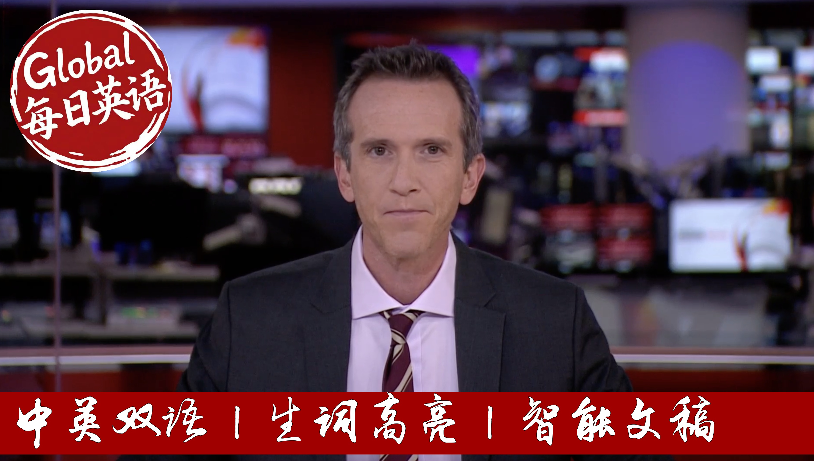

【BBC News 20250922 以色列重大外交挫折｜英国、加拿大和澳大利亚联合宣布正式承认巴勒斯坦为主权国家】
Summary: Britain, Canada, and Australia have jointly announced formal recognition of Palestine as a sovereign state, marking a significant foreign policy shift. The move aims to revive hopes for a two-state solution amid ongoing criticism of Israel's military operations in Gaza. Israeli Prime Minister Benjamin Netanyahu condemned the decision as "rewarding terrorism," while Palestinian representatives welcomed it as long-overdue recognition of their rights. The recognition is largely symbolic for now, with significant practical barriers remaining, including Hamas's control of Gaza and Israeli settlement expansion. Additional countries are expected to follow suit at the UN General Assembly this week.
摘要： 英国、加拿大和澳大利亚联合宣布正式承认巴勒斯坦为主权国家，标志着外交政策的重大转变。此举旨在重启两国解决方案的希望，同时以色列在加沙的军事行动持续受到批评。以色列总理内塔尼亚胡谴责该决定是"对恐怖主义的奖励"，而巴勒斯坦代表则欢迎这一迟来的权利承认。目前承认主要具有象征意义，仍存在重大实际障碍，包括哈马斯对加沙的控制和以色列定居点扩张。预计本周联合国大会期间将有更多国家跟进。

⏱️ Estimated Reading Time: 42 min.
📚 四级生词 📚 六级生词 📚 雅思生词 📚 托福生词 📚 专八生词 📚 SAT生词 📚 考研生词 📚 GRE生词
Life in London, this is BBC News.
Britain's Prime Minister announces the recognition of a Palestinian state as do Canada and Australia.
Israel says Palestinian statehood will not happen.
It's a revived hope of peace and a two-state solution.
The United Kingdom formally recognizes the state of Palestine.
Huge crowds gather in Arizona from memorial to Charlie Kirk, President Trump and JD Vance are set to speak of the event.
Emails from the Duchess of York to Jeffrey Epstein show that she described him as a supreme friend three years after he was jailed for child sex offenses.
Hello and a very warm welcome.
I'm Mark Loan.
Britain, Canada and Australia have formally recognised Palestine as a sovereign state in a coordinated historic foreign policy shift.
It comes amid growing criticism of Israel's military offensive in Gaza.
Sakeer Stama said the move was intended to revive the hope of peace for the Palestinians and Israelis and a two-state solution.
Canada's Prime Minister Mark Carney said, recognising the state of Palestine, led by the Palestinian Authority, empowers those who seek peaceful coexistence and the end of Hamas.
He also accused Israel of working to prevent a Palestinian state.
Australia's Prime Minister Anthony Al-Banesi said Canberra's move recognises the legitimate and long-held aspirations of the people of Palestine to a state of their own.
Other countries are expected to follow suits at the UN General Assembly this week.
The decision has prompted an angry reaction from Israel.
In a message to the countries involved, Prime Minister Benjamin Netanyahu said they were rewarding terrorism and statehood would not happen.
Here's Joe Inwood.
For the last two years of advanced and far-reaching consequences, for the people of Gaza and the West Bank, for Israel, especially the hostages and their families, for the stability of the Middle East, for geopolitics, and now for British foreign policy.
With the actions of Hamas, the Israeli government escalating the conflict and settlement building being accelerated in the West Bank.
The hope of a two-state solution is fading, but we cannot let that light go out.
That is why we are building consensus with leaders in the region and beyond, around our framework for peace.
Allow me at the beginning to express in total about three-quarters of the world's nations now recognise Palestine.
This is the territory supporters of Palestinian independence hope will make up a future state, Gaza and the West Bank.
Gaza has been governed by Hamas, which is still fighting Israel.
The UK says Hamas, a prescribed terrorist organisation, should have no future role.
Parts of the West Bank are run by the Palestinian Authority, though Israel has the last word.
The UK sees a reformed authority as part of the solution.
Many Palestinians criticise it for corruption and failing to stand up to Israel.
The Israelis are rapidly expanding settlements in the occupied territories, illegal under international law.
Israel's government says today's announcement rewards Hamas.
We will have to fight both the UN and in all other arenas against the false propaganda against us and the calls for the establishment of a Palestinian state that will endanger our existence and constitute an absurd reward for terrorism.
The United Kingdom fully recognises it.
This was the moment the head of the Palestinian mission to the UK heard the news.
He said it has nothing to do with Hamas.
This is an alien bit right of the Palestinian people.
A birthright, long overdue and the question is never why should the UK recognise the set of Palestine?
The question is why didn't the UK recognise the set of Palestine all this long?
For all of the symbolism, the barriers to establishing a Palestinian state remain formidable.
Israel's government says it will never let it happen while the US remains firmly opposed to today's declaration.
It is an important step towards the principle of a two-state solution.
In practice, it feels as far away as ever.
Joe Inwood, BBC News.
Let's go live to Ramallah in the West Bank and our correspondent, John Donnison.
John, what's the reaction where you are?
Well, look, I think Palestinians see this as broadly positive, but the truth is that it's not going to change anything on the ground.
So many Palestinians already feel that there is no Palestinian state to recognise.
And that is actually a position that the Israeli government holds and the Israeli government has come out today and said, look, there will never be a Palestinian state.
So this is significant because it shows Israel's growing international isolation and it also shows the growing frustration with Israel's continued operation in Gaza, as well as its persecution of Palestinians in the West Bank.
But it's not going to change anything tomorrow.
And what are the fear there among Palestinians that actually this could embolden the Israelis to pursue further settlement building and perhaps even outright annexation of the West Bank as the far-right ministers in the Cabinet of Benjamin Netanyahu are calling for?
That is a real fear.
And Prime Minister Netanyahu has said that Israel will issue its response when he returns from the United States this week.
He's going to be speaking to President Trump addressing the UN General Assembly.
But I was here in Ramallah back in 2011-2012 when the United Nations recognised the state of Palestine in a vote in the General Assembly.
Palestine got observer status.
And there was huge optimism here.
But actually in the past 10, 12, 13 years things have got worse for Palestinians.
Settlement expansion has accelerated and particularly in the last two years since the war in Gaza started.
There has been a real crackdown on movements.
So there are many more checkpoints.
Barry has been put up.
There's been an increase in settler violence.
The settlers feel emboldened.
So I think the fear amongst Palestinians as they could see their lives get even harder if Israel decides to respond in that way.
And John, you said the reality is clearly not there is no Palestinian state on the ground for now.
And one of the big impediments to a future Palestinian state would be the governance.
So the reform of the Palestinian Authority widely seen as corrupt and inefficient still so key to that.
Yeah, that's important in the West Bank and the truth is that although Hamas may have lost popularity in Gaza throughout the war, Hamas has become stronger here in the West Bank.
It's got more support because they are seeing as putting up a greater resistance to Israel as they would see it than the Palestinian Authority has done which is failed to improve their lives economically, failed to improve their freedoms.
But here's the question right.
So the big question is what happens in Gaza when the war ends?
Who's going to govern in Gaza if not Hamas?
Now, the international community has said that should be driven by the Palestinian Authority and they need to step up.
Israel has flat out rejected that.
It is said it cannot have the Palestinian
Authority in charge in Gaza.
So, you know, there are a lot of unanswered questions and the one thing I would say is I do not think that this recognition today and by more countries tomorrow is going to alter Israel's policy, Prime Minister Nanyah, who's determination in Gaza a single bit.
John Donasam in Ramallah.
Thanks very much.
Gili Roman is the brother of the former Israeli hostage Yardin Roman Gat, who was held for 53 days.
He gave me his reaction to the recognition from Britain, Australia and Canada.
I think that what I'm feeling probably representative of a lot of hostage family and our citizens, it's a lot of frustration.
I feel it's a diversion of the main conversation, putting the pressure, putting the conversation in a different direction.
Instead of focusing on how we can end this war, I'm longing for this war to end for a very, very long time.
We want to save lives.
We want to see our hostages back.
We also want to see a decrease of suffering in this region and securing our safety.
But this is unrelated to what is going on today, the UN.
And I also feel that the pressure is being put on the very wrong side.
How can you pressure hummus to end this war, to make an end to this immense suffering that is going on and on because they refuse to lay down their arms and bring back our hostages.
How is this helpful?
But Gilly, so many of the hostage families, many of whom I've spoken to in Israel, were very much in, still are many of them in favor of peace and many of the hostages themselves.
I'm not perhaps also your sister worked for that and worked for a two-state solution.
Isn't that what this recognition is trying to achieve just to say that is the end political goal here?
First of all, and someone that I worked for peace, I'm a peace educator.
This is what I did.
Very big portions of my life, of course, also my family, my sister.
But peace and two-state solutions, first of all, it's not the same thing.
It's not the say, it's not the same thing.
It's not peace can hopefully be achieved in many ways, in order to put all the emphasis only on one solution, whether I agree with it or not.
We need to lay very strong foundations before we get to the final solutions and we are very, very far away from this.
So, currently I do not see what is the main goal here.
What is the point?
If you want to talk about peace, first of all, you need to be realistic and talk about what is going on on the ground.
On the ground we have a war with a fundamentalistic, jihadic leadership of the Palestinians.
That is controlling Gaza, not willing to concede, not willing to lay down its arms, and very, very popular at the West Bank where your administration wants to form an independent state that will also be controlled by Hamas.
How is this leading us to this?
Although I have to say that the Tsukkis, Dama and others have said they will have nothing to do with Hamas in the future, but you have to ask, is your leadership serious?
Because they cannot even help us win this very justified war against Hamas.
They did not put any reliable pressure, not diplomatic, no economic, not military, on Hamas or their supporters like Qatar and Iran.
They did nothing, almost nothing that is effective.
So how can they promise that?
You have to take them seriously and ask, if you say that, how can you promise that when you have zero accountability, you have no proof of any either willingness or effectiveness of dealing with the leaderships of the Palestinians.
We are two years into the war, after one of the worst massacres in our history and modern history.
What is the UK administration, your leadership, has done effectively to assure that Hamas is not going to be in control of the Palestinians?
Gili Romand there, the brother of Yardin, Roman Gat former hostage held in Gaza.
Well, France is among other nations expected to follow suit this week at the UN General Assembly in New York by recognizing a Palestinian state.
Here's the French President Emmanuel Macron, speaking to our U.S. partner, CBS.
The objective of Hamas is absolutely not to create the Palestinian state.
The objective of Hamas is to destroy Israel, to convince the maximum number of people that they have no chance to have peace and stability and precisely a Palestinian state.
And to kill the maximum number of Israeli people, and this is why, if we want to stop this why, if we want to isolate Hamas, the recognition process and the peace plan which goes with this recognition process is a precondition.
So my first point is to say, I don't answer the MS with that.
I don't meet the expectations of Hamas.
Hamas is just obsessed by destroying Israel.
But I recognize the legitimacy of so many Palestinian people who want a state, who are a people, they want a nation, they want a state, and we should not push them toward Hamas.
If we don't offer them a political perspective and such a recognition, the unique answer will be security and they will be completely trapped by Hamas as the unique option.
Our diplomatic correspondent James Landel has been speaking to Philippe Lazareini, who is head of UNWAR, the UN Agency for Palestinian refugees.
James started by asking his reaction to today's recognition of a Palestinian state.
They recognize after 140 countries have already recognized the state of Palestine.
I do believe it's very important, especially if after the recognition it is translated into a genuine commitment to make peace under two states' solution a reality.
But people say a two-state solution, you know, it's a slogan.
It's no longer a viable option.
It's something that is trotted out by politicians, but actually the chances of getting there are close to zero.
Well, the two-state solution is still the right of the Palestinian for self-determination.
It's still a concept which will allow the Palestinian to live in their homeland, which is Palestine.
So it is true that the two-state solution has been more even for far too long, but today I really hope that after what happened in the region, there is a genuine wake-up call to make this finally a reality.
We have two people, one land or two lands, they have to live together.
What does recognition mean for people on the ground in
Gaza?
For the time being, it doesn't mean anything as long as there is not a genuine ceasefire, but there is a hope for the people in Gaza that if these countries are going for recognition, that we will also redouble the effort to make the ceasefire first a reality.
So you think that even for people in Gaza who are thinking about safety, security, food, a house or something to shelter themselves in, they still need that hope of a political horizon.
Well, anyone to survive needs to believe that there will be a better future, because if you do not have this kind of believer, what remains?
No hope in this hell, I mean this is unbearable, I remember people saying that when they had no hope anymore, I wish I would die because I might go to the real hell and maybe in this real hell we will be better treated and we will be far food.
This is certainly not the kind of future you hope for the people of Gaza.
Is there a risk that this recognition is counterproductive, that it creates a political row with Israel and that actually hinders efforts to get aid into Gaza?
Well, there will be a reaction, there is no doubt, but we have to overcome this reaction.
I think this recognition has to be accompanied by your genuine commitment to involved, invest in a peace process into region.
Now tens of thousands of people are gathering for the memorial to the conservative activist Charlie Kirk in Glendale, Arizona, his home state.
This is the scene live at the 63,000 capacity state farm stadium in Glendale.
Charlie Kirk was of course shot dead during a public event at Utah Valley University on September 10th, the 22-year-old Tyler Robinson has been charged with the killing and remains in custody.
The service is gathering the most senior members of the Trump administration, many of whom were close to Charlie Kirk.
As he left the White House, this is what President Trump had to say.
Celebrate the life of a great man today.
He is a young man but a great man and we look forward to it.
It really is, we want to look at it as a time of healing, a time of whatever.
Something like this could have happened is not even believable.
We will have a very interesting day.
Very tough day.
Our North America correspondent to Runa Day Mukaji is also in Glendale, Arizona.
I asked him for his thoughts ahead of the memorial service.
They just paint the picture for us if you can, likely to be on a similar kind of scale.
We understand almost a state funeral.
I think the scale is what strikes you the first.
As soon as you sort of make your way towards this venue behind me, that stadium is where the memorial service is going to be held and you know, as soon as we turned into that, the last stretch heading towards that, it took us about two hours to cover a stretch which was just about one mile because there were just cars lined up trying to get to the venue.
That is also partly because this is such a massive security operation as well because you've got those high profile visitors who will be coming into this stadium.
And then when we got here, we saw a huge crowd just in snaking lines trying to make their way to the stadium which to be honest over the last half an hour or so, it's thinned down because a lot of them have finally managed to make their way in.
Some of them who we spoke to decided to give up because they've been standing in line since three or four or even six in the morning.
So they kind of just gave up and decided to go on.
But it's been quite a short strength, not just because turning point USC, the North for profit organization, the Charlie Cook founded when he was 18 and 20.
It's a headquartered here.
But also we've heard a lot of people who have been coming in from other states as well.
I spoke to a few people who came in from states like California and other parts of the US as well to show support on a day like this which they feel is very important as they told me to honor the life and legacy of Charlie Cook.
And a run today to a memorial or a killing I should say that has taken on a deeply political dimension too, not unifying as I suppose it could have been but perhaps further polarising the United States.
Well certainly and you know when speaking to a lot of people this is the 10th of September since this incident took place and it's it's something that a lot of these analysts have pointed out that you know it's something that has definitely bruised the political spectrum of the US, of US politics in what is being seen widely especially by the conservatives as a political assassination.
You know here was a man they say who was engaged in debate who was trying to generate opinions and trying to you know speak to people and sort of get them in conversation who was who was eliminated by a bullet so that's that's the sort of emotional appeal that has come in from the conservative side but you know you know as popular as he was he was also a very polarising figure because of his views and hard views on some very very indentious issues that have dominated the discourse here in the US politics as well as you know society.
I run a name Mukaji in Arizona.
Now two newspapers here in the UK have reported on an email from the Duchess of York to the late convicted sex offender Jeffrey Epstein in which she described him as a supreme friend.
The gushing email came weeks after Sarah Ferguson who was once married to Prince Andrew publicly distanced herself from Epstein saying she would never have have anything to do with him again.
A spokesperson former's Ferguson says the email was sent to counter a threat that Epstein had made to sue her for defamation.
For more on this I spoke a little earlier to the royal commentator and former BBC royal correspondent Jenny Bond.
This is a story that's rumbled on for well I remember talking about it in 2012 so we're talking more than a decade.
I think it's deeply disturbing it's embarrassing it's humiliating and it's enormously distasteful to think that the Duchess of York was continuing an association even just by email with a convicted sex offender and calling him a supreme friend even if it was because she was trying to stop a lawsuit, a defamation lawsuit because this time it didn't just involve her and if you think back you know 1992 when she was caught with her toes being sucked by her financial advisor we all thought that couldn't really get much worse but that was just her personal nightmare if you like but this is a nightmare that involved obviously many underage girls and for them to be part of this latest royal scandal and really don't think things go much worse now for for Sarah Ferguson.
Royal commentator Jenny Bond now tributes have been paid today to the broadcaster and journalist John Stapleton who has died at the age of 79.
He began his career in newspapers at the oldm chronicle and went on to present programs such as the BBC's Panorama News Night, Watchdog and ITV's Good Morning Britain.
He'd been diagnosed with Parkinson's disease.
Ellie Price looks back at his life.
Good evening.
Tonight nationwide on the road hits what weather wise at least is the wild west.
John Stapleton became a household name in the mid 70s on the BBC's Nationwide Programme first as a reporter then a main presenter.
Alice I always thought that clog dancing was just something that uncouth northerners like myself did.
What a long head trend is like you doing clog dancing.
Imagine someone knocking on your door in the middle of the night.
A versatile journalist at home and abroad on the serious and less serious stories.
How nasty are you?
About this nasty.
He also worked on Panorama News Night and ITV's Good Morning Britain.
We gave thousands of you quite a shock when we reveal the potential dangers of badly-wired plugs.
And of course the consumer show Watchdog which he presented with his wife Lin Foltz would.
But he was arguably best known as a breakfast presenter.
And this is the BBC's Breakfast Time Programme.
First on the BBC.
And then on ITV where he stayed for more than two decades appearing on our screens on and off until a year ago when he announced his Parkinson's diagnosis.
Never wanted to shy away from the awkward subjects he spoke openly about his concerns about the condition and what the future might hold.
It's very frustrating sometimes particularly with people are constantly saying to you, sorry what did you say and you have to repeat yourself time and time again.
I am fairly pragmatic about the prospect of this getting worse.
I try to remain positive because what's the point of not being?
John Stapleton's daybreak colleague Kate Garroway has led the tributes to her dear friend and journalistic hero.
Our Good Morning Britain's Susanna Reed said he was a legend in broadcasting and a huge part of television history.
The broadcaster John Stapleton who has died at the age of 79.
There's lots more on our top story.
The decision by Britain, Australia and Canada to recognise a Palestinian state on our website.
You'll find there not only the latest news on the story but also very interesting in depth piece by my colleague Paul Adams.
Recognising Palestinian state would open another question who would lead it with big questions over whether the Palestinian authority can be reformed.
And of course big questions also about future leadership of Gaza given that all three countries have ruled out working with Hamas.
I'll be back with the headlines in just a moment or two.
Stay with us here on BBC News.